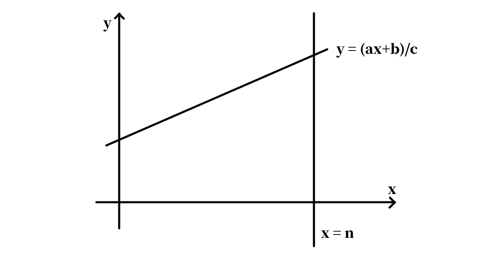
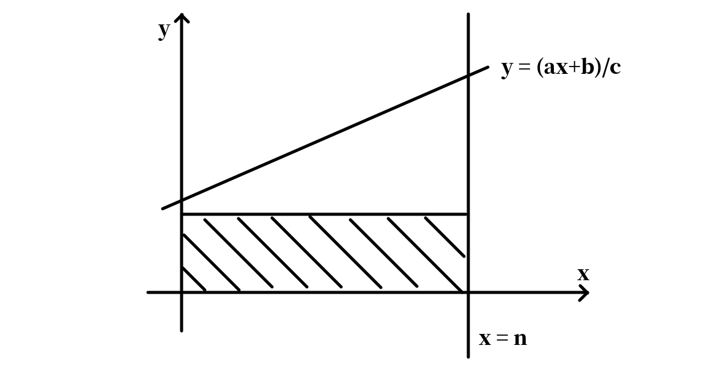
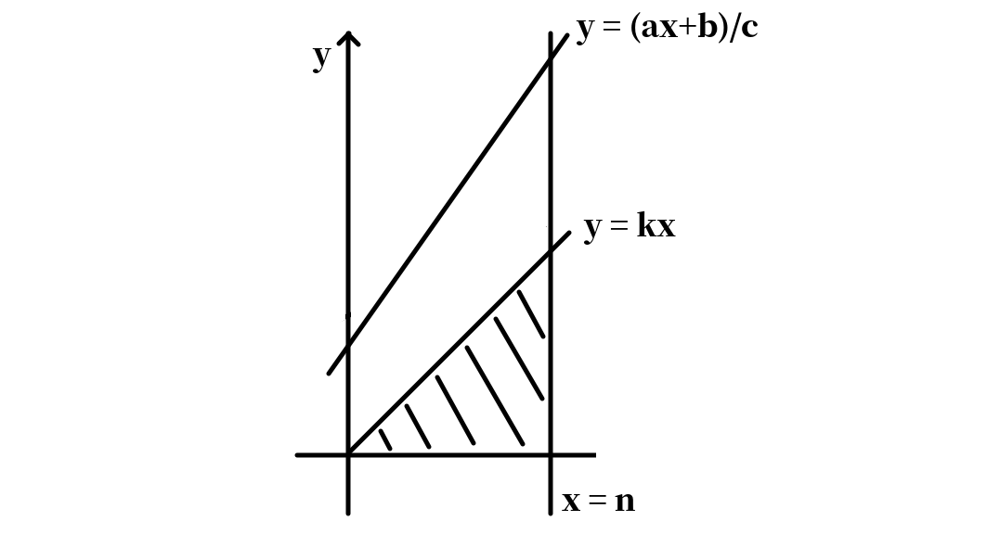
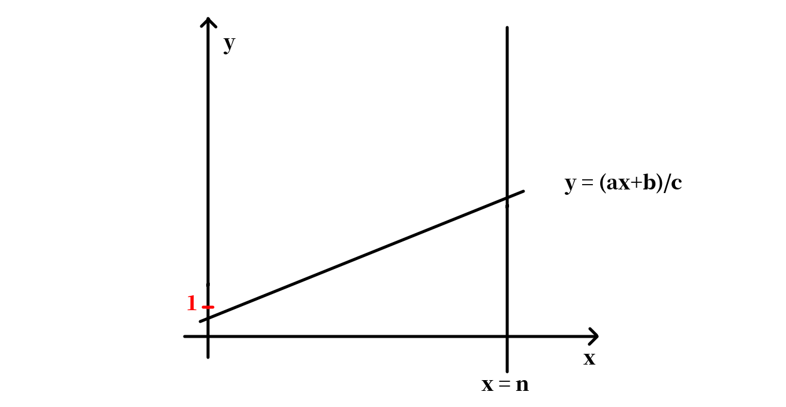
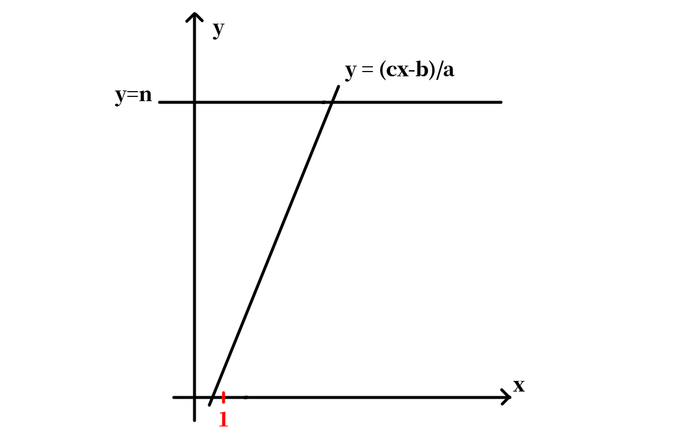

类欧几里德算法小结
以前学的一直是推式子版的类欧，难记又难写。现在学会了几何意义版本，就写个总结。
问题引入
对于正整数参数和非负整数，我们想要计算。
考虑其几何意义，设。我们要求的实际上是二维平面上，轴，轴和这条直线围成的梯形中整点的数量。细节地说，对于边界上的点，轴上的点不能取，其他三条线上的点都能取。

接下来我们做一些分类讨论，目的是减小问题规模，划分出子问题。
当时，我们可以截一个矩形出来：

然后问题转化为求上面那个梯形里的整点数。因此有
当时，我们引一条过原点斜率为整数的直线，其中。那么我们先考虑求下方的整点数，然后求与之间的整点数。

前者可以用等差数列公式求得。对于后者，考虑将整个平面上的点做一个映射：。容易发现这个映射的实质是把上面的那个梯形变成紧靠轴的直角梯形。而经过映射后得到的直线变成了。因此
最后考虑且的情况。

注意到在这种情况下，与轴的交点位于中。而直线的斜率小于。这时我们考虑将平面沿翻转：

考虑用矩形的整点数减去三角形的整点数。不过这里引入了两个问题：
- 求三角形的面积不属于我们定义的类欧问题，需要转化。
- 求三角形的整点数时直线上的点是不能算的。
对于第一个问题很简单：把轴向右平移一个单位即可。这样直线的解析式就变成。问题转化为矩形内整点数减去梯形内整点数。
对于第二个问题，我们将直线向下平移一点点即可。所谓的一点点指。因此直线变成。
在翻转之后，的上限取。由于轴向右平移了一个单位，因此实际上是。
于是我们得到。
把三个转移合到一起就得到类欧几里德的完整算法了。
边界条件是，此时。
int f(int a, int b, int c, int n) {
if(a == 0) {
return (b/c)*(n+1);
}
if(a < c && b < c) {
int m = (a*n+b)/c;
return m*n - f(c, c-b-1, a, m-1);
}
return f(a%c, b%c, c, n) + (b/c)*(n+1) + (a/c)*(n*(n+1)/2);
}问题扩展
考虑求，。
对于，可以理解为是给二维平面上的整点定一个权值。那么我们要求的就是梯形里所有整点的点权和。
截矩形和截三角形的两种转移都可以容易地推出。问题在于沿翻转后，此时的点权变成了，不太能用描述子问题。
不妨看。要求，我们可以定点权。这时我们可以认为沿翻转后，点权变成了。也就是说我们可以用和描述的转移。
同样的，对于而言，前两种转移也是 trivial 的，而对于第三种转移，沿翻转后点权变成了，可以理解为是。因此我们同样可以用和描述的转移。
修订记录
- 2021年4月27日 第3次修订
- 2021年3月27日 第2次修订
- 2021年3月26日 创建文章